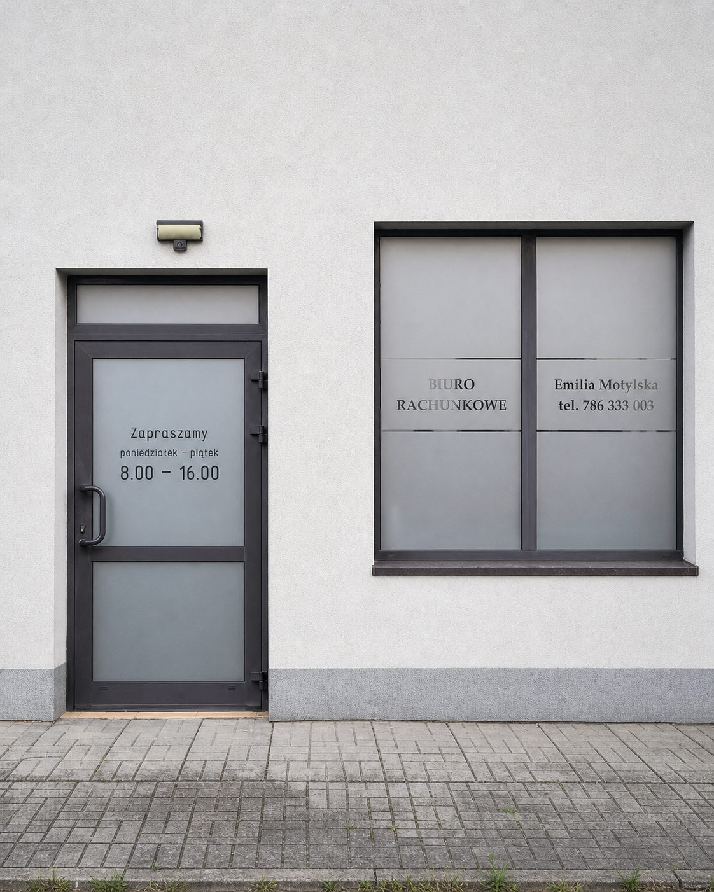

Kompleksowa obsługa finansowo-księgowa dla firm każdej wielkości.
Zduńska Wola i cała Polska.
Świadczymy kompleksowe usługi finansowo-księgowe dostosowane do potrzeb Twojego biznesu.
Prowadzenie ksiąg rachunkowych zgodnie z ustawą o rachunkowości. Bilans, rachunek wyników, sprawozdania finansowe.
Uproszczona ewidencja przychodów i rozchodów dla małych firm oraz rozliczenia ryczałtowe.
Kompleksowa obsługa kadrowo-płacowa — od umów po rozliczenia ZUS i deklaracje podatkowe pracowników.
Prawidłowe rozliczenia podatku VAT, sporządzanie plików JPK oraz reprezentacja przed Urzędem Skarbowym.

Właścicielka · Biuro Rachunkowe Emilia Motylska
„Wierzę, że dobra księgowość to nie tylko zgodność z przepisami — to fundament spokojnego prowadzenia biznesu.”
Właścicielka biura rachunkowego z siedzibą w Zduńskiej Woli przy ul. Ignacego Jana Paderewskiego 3A. Świadczy profesjonalne usługi księgowe dla przedsiębiorców z regionu i całej Polski.
Nasze usługi świadczone są na podstawie oficjalnych uprawnień nadanych przez Ministerstwo Finansów Rzeczypospolitej Polskiej.
Nr 20002/2007
Nadane przez Ministerstwo Finansów na podstawie art. 76a ustawy o rachunkowości. Uprawnia do świadczenia usług w zakresie prowadzenia ksiąg rachunkowych, podatkowej księgi przychodów i rozchodów oraz ewidencji dla potrzeb ryczałtu.
Biuro prowadzimy przy ul. Ignacego Jana Paderewskiego 3A w Zduńskiej Woli. Obsługujemy przedsiębiorców z miasta, całego powiatu zduńskowolskiego i sąsiednich gmin — a dzięki księgowości zdalnej również klientów z dowolnego miejsca w Polsce.
Osobista obsługa w biurze: odbiór dokumentów, bieżące konsultacje, podpisywanie pełnomocnictw. Dojazd do biura z centrum miasta zajmuje kilka minut.
Regularnie prowadzimy księgowość firm z całego regionu. Dokumenty można przekazywać osobiście, kurierem lub elektronicznie — bez konieczności dojazdu co miesiąc.
Skany faktur, podpis elektroniczny i kontakt telefoniczny lub mailowy w zupełności wystarczą, by prowadzić pełną obsługę księgową bez wizyty w biurze.
Zebraliśmy pytania, które najczęściej zadają przedsiębiorcy szukający biura rachunkowego w Zduńskiej Woli.
Cena zależy przede wszystkim od formy opodatkowania, liczby dokumentów księgowych w miesiącu, statusu podatnika VAT oraz liczby zatrudnionych pracowników. Ryczałt lub KPiR dla jednoosobowej działalności bez pracowników to najniższy próg cenowy, pełne księgi rachunkowe spółki — najwyższy. Podczas bezpłatnej konsultacji wyliczamy konkretną kwotę na podstawie Twojej sytuacji i przedstawiamy ją w formie stałego miesięcznego abonamentu, bez ukrytych opłat.
Tak, biuro rachunkowe można zmienić w dowolnym momencie roku — nie trzeba czekać do stycznia. Wystarczy wypowiedzieć dotychczasową umowę zgodnie z okresem wypowiedzenia, odebrać dokumentację księgową za bieżący rok i zaktualizować pełnomocnictwo UPL-1 w urzędzie skarbowym. Przejęcie ksiąg od poprzedniego biura, ich weryfikację i całą formalną stronę zmiany bierzemy na siebie.
Decyduje struktura kosztów. Ryczałt od przychodów ewidencjonowanych opłaca się firmom usługowym o niskich kosztach — podatek liczony jest od przychodu według stawki właściwej dla danej działalności, bez możliwości odliczenia wydatków. Podatkowa księga przychodów i rozchodów jest korzystniejsza tam, gdzie koszty stanowią znaczącą część przychodu, bo podatek płaci się od faktycznego dochodu. Na konsultacji porównujemy oba warianty na Twoich realnych liczbach, uwzględniając także wysokość składki zdrowotnej, która różni się między formami opodatkowania.
Obowiązek prowadzenia ksiąg rachunkowych powstaje po przekroczeniu ustawowego limitu przychodów za poprzedni rok obrotowy, określonego w ustawie o rachunkowości. Niezależnie od przychodów pełną księgowość muszą prowadzić m.in. spółki z ograniczoną odpowiedzialnością, spółki akcyjne i spółki komandytowe. Monitorujemy limit na bieżąco i informujemy z wyprzedzeniem, gdy zbliżasz się do progu, żeby przejście odbyło się spokojnie, a nie w ostatnim tygodniu grudnia.
Tak. Biura rachunkowe podlegają obowiązkowemu ubezpieczeniu odpowiedzialności cywilnej za szkody wyrządzone w związku z prowadzoną działalnością — nasze biuro takie ubezpieczenie posiada. Oznacza to, że ewentualne konsekwencje finansowe błędu popełnionego po naszej stronie pokrywa polisa, a nie Twoja firma. Warto zawsze zapytać potencjalne biuro o aktualną polisę OC przed podpisaniem umowy.
Co miesiąc potrzebujemy faktur sprzedaży i zakupu, wyciągów bankowych, raportów kasowych oraz dokumentów kadrowych, jeśli zatrudniasz pracowników. Na starcie współpracy dochodzą jednorazowo: wpis do CEIDG lub KRS, umowa spółki, pełnomocnictwo UPL-1 do podpisywania deklaracji elektronicznych oraz dokumentacja księgowa za bieżący rok, jeśli przechodzisz z innego biura. Dokumenty przyjmujemy osobiście w biurze lub elektronicznie.
Tak. Poza Zduńską Wolą i powiatem zduńskowolskim obsługujemy przedsiębiorców m.in. z Sieradza, Łasku, Szadku, Zapolic, Warty i Poddębic, a w modelu zdalnym — z całej Polski. Dokumenty przekazywane elektronicznie, deklaracje składane przez internet i stały kontakt telefoniczny sprawiają, że fizyczna odległość nie ma wpływu na jakość i terminowość obsługi.
Certyfikat księgowy był państwowym potwierdzeniem kwalifikacji do usługowego prowadzenia ksiąg rachunkowych, nadawanym przez Ministra Finansów po zdaniu egzaminu państwowego. Nasze biuro posiada certyfikat nr 20002/2007 wydany 14 marca 2007 roku. Choć po deregulacji zawodu certyfikat nie jest już wymagany do prowadzenia biura rachunkowego, pozostaje realnym dowodem zweryfikowanych przez państwo kompetencji — a takim dokumentem dysponuje dziś mniejszość biur na rynku.
Tak — prowadzimy przez cały proces rejestracji działalności: dobór kodów PKD, wybór formy opodatkowania, zgłoszenie do CEIDG, rejestrację do VAT i zgłoszenia do ZUS. To moment, w którym najłatwiej popełnić kosztowny błąd na lata, dlatego warto omówić założenia jeszcze przed złożeniem wniosku. Konsultacja przed rejestracją firmy jest bezpłatna.